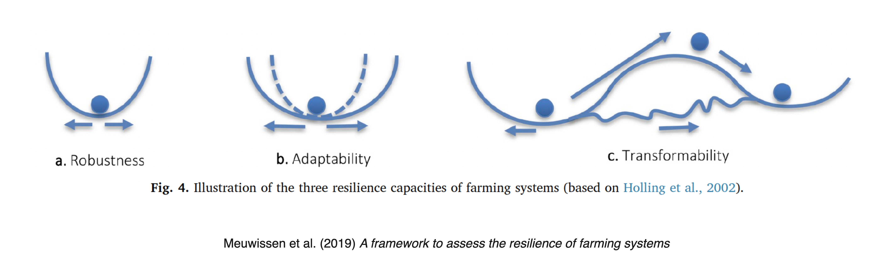
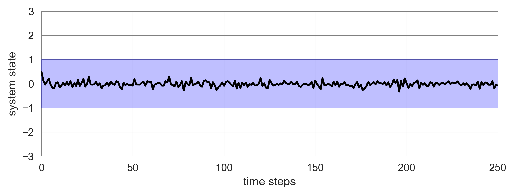
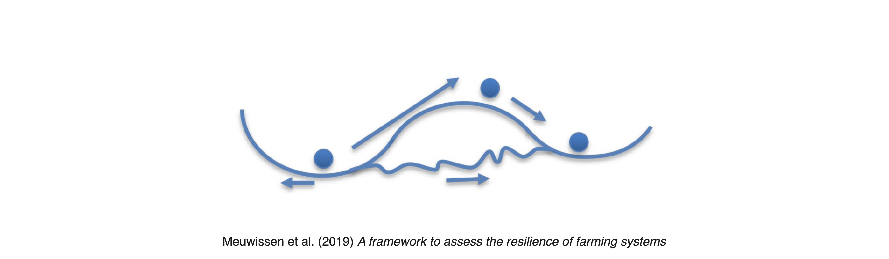
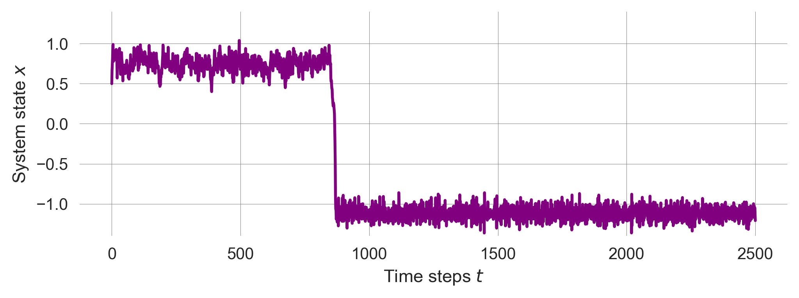
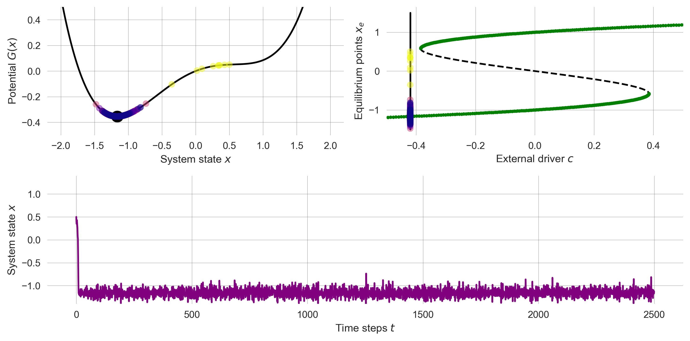

import numpy as np
import matplotlib.pyplot as plt
from ipywidgets import interact, fixed
import matplotlib.style as style; style.use('seaborn-v0_8')
plt.rcParams['figure.figsize'] = (7.8, 2.5); plt.rcParams['figure.dpi'] = 300
color = plt.rcParams['axes.prop_cycle'].by_key()['color'][0] # get the first color of the default color cycle
plt.rcParams['axes.facecolor'] = 'white'; plt.rcParams['grid.color'] = 'gray'; plt.rcParams['grid.linewidth'] = 0.25; 4 Resilience
▶ Complex Systems Modeling of Human-Environment Interactions
>> Open the latest version on the web, Github or in GoogleColab <<
Wolfram Barfuss | University of Bonn | 2025/2026
4.1 Motivation | Resilience in sustainability contexts
Think of the term “resilience” in the context of sustainability and human-environment interactions. What does it mean to you? How can we model it? How can we measure it? What are the key challenges and opportunities in this field?
Resilience everywhere
Capacity of a system to cope with shocks
from latin resiliō (“to spring back”)
Resilience is a widly used term in many different fields, from psychology to engineering, from ecology to social-ecological systems.
Psychology

Resilience is the capacity to recover from challenges and use them as learning opportunities. Resilient peole are perceived as having a positive outlook, handling difficulties calmly, and managing negative emotions effectively.
Engineering

Resilience in engineering refers to the ability of complex systems to anticipate, adapt to, and recover from unexpected disruptions or failures. This field emphasizes not just the prevention of failures but also the capacity to maintain functionality and performance in the face of unforeseen challenges.
Ecology

Resilience in ecology refers to the capacity of an ecosystem to endure disturbances while preserving its core functions, structures, and processes. This concept includes the ability to recover and adapt to environmental changes, allowing ecosystems to endure challenges and thrive.
Human-environment interactions

Resilience in sustainability and human-environment interactions means the ability of social and ecological systems to absorb disturbances, adapt to changes, and maintain functionality. This concept is crucial as it highlights how communities and ecosystems withstand environmental stressors like climate change, pollution, and resource depletion, but also social stressors like economic crises, conflicts, and pandemics.
According to (Reyers et al., 2022), resilience has reshaped sustainable development in six ways by 1) shifting focus from static capitals to dynamic capacities, 2) emphasizing relational processes over isolated objects, 3) prioritizing adaptive processes over fixed outcomes, 4) considering systems as open and interconnected rather than closed, 5) tailoring interventions to specific contexts rather than applying generic solutions, and 6) recognizing complex causality over linear cause-effect relationships. These shifts have led to innovative practices that better address the complexities of sustainability, although challenges remain in aligning practice with theoretical and methodological advancements in resilience science.
Resilience vs. dynamics
Resilience differs from merely being static or unchanging over time; resilient systems are often quite dynamic. Conversely, systems that remain constant over time can lack resilience. Acknowledging the difference between static stability and resilience is crucial (Meadows, 2009).
- Static stability is observable; it can be assessed by analyzing changes in the system’s conditions over time.
- Resilience, on the other hand, is often only noticeable when the system is pushed beyond its limits and breaks down. Because resilience may not be apparent without a systems view, individuals frequently prioritize stability, productivity, or other more immediately observable characteristics over resilience.
For example, just-in-time deliveries of products to retailers and parts to manufacturers have minimized inventory fluctuations and lowered costs across various industries. Nonetheless, this mode of operation has rendered the production system more vulnerable to disruptions in fuel supply, computer failures, labor shortages, and other potential shocks.
Another example constitutes the intensive management of European forests. Over centuries, it has transformed native ecosystems into single-age, single-species plantations, frequently composed of nonnative trees. These plantations aim to produce wood and pulp consistently over time. However, these forests have lost their resilience without multiple species interacting with each other and their environment. As a result, we are witnessing their vulnerability to threats such as industrial air pollution and pests like the bark beetle.
Resilience in the sustainability sciences
Resilience as a property of dynamic systems
Dynamic systems are those that change over time, often in response to internal or external stimuli. Resilience in these systems is about how well they can absorb shocks and continue to operate effectively. For example, an ecosystem might experience a natural disaster but still maintain its biodiversity and functionality.
Resilience as a measurable quantity
Resilience is considered a measurable quantity through various indicators and metrics that capture the capacity of systems to absorb disturbances, adapt to changes, and maintain functionality. In field studies of social-ecological systems (SES), resilience can be assessed using indicators related to ecological, social, economic, and institutional dimensions. These indicators help researchers quantify resilience and understand how different systems respond to various stressors and shocks.
It is important to acknowledge these different meanings of resilience when discussing sustainability and human-environment interactions.
Resilience of what to what?
The resilience of what to what is a key question when applying the concept of resilience to sustainability and human-environment interactions (Carpenter et al., 2001).
The ‘of what’ refers to system function or configuration to be sustained, such as biodiversity, ecosystem services, social cohesion, or economic stability.
The ‘to what’ refers to the disturbances, shocks, or changes that the system needs to withstand, such as climate change, natural disasters, economic crises, or social conflicts.
Specified vs. general resilience
Another key distinction in resilience research is between specified and general resilience (Folke et al., 2010).
Specified resilience refers to the resilience of a system function to specific challenges or disturbances (i.e., a narrowly defined what to what). For example, - a community might have specified resilience to flooding by building dams and flood protection walls; - a farmer might use pest-resistant crops to increase resilience to specific pest infestations; or - an individual might get vaccinated against a particular disease to increase resilience to that disease.
Generalized resilience refers to the system’s capacity to deal with the unknown, uncertainty, and surprise (i.e., a broadly defined what to what). For example, - a community or society with functioning institutions and social networks has generalized resilience to various shocks and stresses; - a framer with a healthy business model and diversified crops has generalized resilience to various economic and environmental changes; - a functioning immune system can provide generalized resilience to a wide range of diseases;
Example | Resilience of farming systems
Challenges
A lot of resilience scholarship utilizes qualitative methods, case studies, and conceptual frameworks (i.e., mental, verbal and pictorial models) to understand the dynamics of social-ecological systems. While these approaches are invaluable for generating diverse insights and hypotheses, they have difficulty in providing a precise understanding of resilience that allows for quantitative predictions and generalizable results in the sense of identifying universal system structures of relevance.
Here, the mathematics of stochastic dynamics and bifurcations can help.
Learning goals
After this lecture, students will be able to:
- Explain how resilience concepts related within the context of sustainability science.
- Implement and simulate nosiy dynamic system models to illustrate different resilience types using Python.
- Quantify changes in resilience to measure when a systems approaches a tipping point.
4.2 Resilience types
While resilience, in general, is defined as the capacity of a system to absorb disturbances, adapt to changes, and maintain functionality, it is useful to differentiate between three types of resilience that can be distinguished based on the system’s response to stressors and shocks.
These three types are are often illustrated by ball-and-cup diagrams

How to formalize these concepts?
We start by importing the necessary libraries and setting up the plotting environment.
Robustness resilience
The capacity to resist (or absorb) change and continue to function in its present state
Robustness resilience (sometime only called robustness (Anderies et al., 2013)) is the most established and straightforward type of resilience. It refers to the system’s ability to resist or absorb changes and continue to function in its present state. A system with high robustness resilience can withstand disturbances and shocks without significant changes to its structure or function. This type of resilience is often associated with stability and persistence in the face of external stressors.
While it is the simplest form of resilience, it acknowledges that the future is inherently unpredictable. We cannot observe the current state to full precision. And we cannot process and extrapolate all the information and uncertainty. Therefore, robustness resilience is a key concept in the context of uncertainty and complexity.
Robustness | Ball-and-cup diagram
The ball-and-cup pictorial model of the robustness resilience portrays a fixed cup (reprensting the potential) and a ball (representing the system state)
External shocks change the system state along the x-axis.
However, this pictorial model leaves crucial questions unanswered:
- How does the system state change over time?
- How large and frequent are the shocks?
- What happens if the system state exceeds the cup?
Converting this pictorial model into a mathematical model requires us to become more specific.
Robustness | System dynamics and potenial
We formalize the idea of having a single basin of attraction by the following difference equation,
\[\Delta x = x^3 - cx,\]
where \(c\) is a parameter that controls the system’s stability and \(x\) is the system state. As a side note, this model is also known as the normal form of a subcritical pitchfork bifurcation in dynamical systems theory (see exercise on Tipping Elements).
Integrating the negative difference equation, we obtain the potenial function \(G(x)\) by \(\Delta x = - G(x)/dx\) as
\[G(x) = \frac{c}{2}x^2 - \frac{1}{4}x^4.\]
Converting the potential function into Python yields,
def G_robustness(x, c): return c/2*x**2 - x**4/4We devise a function to plot the potential function, togehter with the system’s equilibirum points and their stability (if \(c>0\), \(x_e=0\) is stable and \(x_e = \sqrt{c}\) and \(x_e= -\sqrt{c}\) are unstable; if \(c<0\), \(x_e=0\) is unstable; see the exercise on Tipping Elements).
def plot_robustness_potential(c=2):
xs=np.linspace(-2,2,101); plt.plot(xs, G_robustness(xs, c), '--', color='blue')
plt.xlabel(r"System state $x$"); plt.ylabel(r"Potential $G(x)$")
if c>0: # draw fixed points
xs=np.linspace(-np.sqrt(c), np.sqrt(c), 101); plt.plot(xs, G_robustness(xs, c), color='blue')
plt.scatter(np.sqrt(c), G_robustness(np.sqrt(c), c), s=200, c='w', edgecolor='blue')
plt.scatter(-np.sqrt(c), G_robustness(-np.sqrt(c), c), s=200, c='w', edgecolor='blue')
plt.scatter(0, G_robustness(0, c), s=200, color='blue')
else:
plt.scatter(0, G_robustness(0, c), s=200, c='w', edgecolor='blue')
plt.ylim(-0.2, 1.1)plot_robustness_potential()We observe a single basin of attraction for the system state \(x\). For \(c>0\), the unstable fixed points indicate where boundaries of the cup lie, i.e., \(+\sqrt{c}\) and \(-\sqrt{c}\).
Robustness | Stochastic dynamics
To account for shocks or external changes to the system, we refine the update equation as follows,
\[x_{t+1} = F_N(x_{t}) = F_D(x_{t}) + n\eta_{t} = x_{t} + (cx_{t} + x_{t}^3) + n\eta_{t}.\]
The new stochastic or nosiy udpate equation \(F_N(x_t)\) is composed of the orignial deterministic map \(F_D\), plus a stochastic random variable \(\eta_{t}\) of mean zero. The paramter \(n\) regulates the strength of the noise term.
We model the shocks by a normally distributed random variable \(n_{t}\) with mean zero and unit variance. The corresponding Python function is,
def F_robustness_noise(x, c, n): return x + x**3 - c*x + n*np.random.randn()We define a plotting function to illustrate the system dynamics under stochasticity. It also shows the basin of attraction, i.e., the region where the system state converges to the stable fixed point under the purely deterministic dynamics.
def plot_robustness_noise(noiselevel=0.1, c=1.0, xinit=0.5):
iters=250
params=dict(c=c, n=noiselevel)
x = xinit # re-storing the initial values
trajectory = [x] # container to store the trajectory
for t in range(iters): # looping through the iterations
x_ = F_robustness_noise(x, **params) # the ** notation extracts the dict. into the func. as parameters
if np.abs(x)>3: break # stop the simulation when x becomes too large
trajectory.append(x_) # storing the new state in the container
x = x_ # the new state of the system `x_` becomes the current state `x`
plt.plot(trajectory, 'k'); plt.xlabel('time steps'); plt.ylabel('system state'); # makes plot nice
plt.fill_between([0, iters], [-np.sqrt(c), -np.sqrt(c)], [np.sqrt(c), np.sqrt(c)], color='blue', alpha=0.25)
plt.xlim(0,250); plt.ylim(-3,3)If the noise level is low, the system is resilient to shocks and remains in the basin of attraction.
np.random.seed(42); # fixing the random seed for reproducibility
plot_robustness_noise()
However, if the noise level is high, the system can escape the basin of attraction and diverge.
np.random.seed(42); plot_robustness_noise(noiselevel=0.3)The level of resilience of the system is the width between the unstable fixed points. This quantity gives the maximum magnitude of a shock the system can still tolerate.
Robustness | Real-world examples
Infrastructure and technial systems, such as bridges, buildings, and buildings, are often engineered for robustness with a safety margin to withstand natural disasters like earthquakes or hurricanes. For example, buildings in earthquake-prone areas are constructed with materials and designs that allow them to absorb and dissipate seismic energy, minimizing damage and maintaining structural integrity. Or an elevater can carry more weight than its maximum load capacity to account for unexpected situations. However, these systems are not able to adapt to changing conditions or recover from severe damage without external intervention.
Robust software systems are often designed to maintain functionality in the face of errors or unexpected inputs. However, this robustness might be achieved through rigid error-handling mechanisms that don’t necessarily scale or adapt to the severity of the issue. For instance, in cyber security, multi-layered security protocols, such as encryption, two-factor authentication, and fraud detection algorithms, help maintain the security and reliability of digital systems. However, these systems might not be able to adapt quickly to new types of cyber threats or changing regulatory requirements without significant investment and effort.
In the mobility sector, the german car industry’s adherence on combustion engines can also be seen as robustness resilience. The industry has been able to maintain its market share and profitability for some time despite increasing pressure to transition to electric vehicles. However, this robustness might not be sustainable in the long term as the industry faces challenges related to climate change, air pollution, and changing consumer preferences.
However, resilience in (social-)ecological systems is not always adequately described by this form of resilience.
This has lead scholars to broaden the meaning of resilience.
Adaptation resilience
Capacity of a system to adjust its responses to changing external drivers and continue developing within the current stability domain or basin of attraction
Adaptation | Ball-and-cup diagram
The ball-and-cup pictorial model of the adaptation resilience portrays a variable cup (reprensting the potential) and a ball (representing the system state). As before, shocks change the system state along the x-axis.
In adaptation resilience, the system can adjust its responses to changing external impacts. The capacity of a system to absorb shocks is linked to the strenght of the shocks. Adaptation resilience makes the resilience concept more flexible and adequate for (social-)ecological systems.
However, this pictorial model leaves the crucial question of how the system adjusts its responses unanswered.
Converting this pictorial model into a mathematical model requires us to become more specific. How could we convert the adaptation ball-and-cup diagram into a mathematical model?
Adaptation | System dynamics
We start from our previous dynamic systems model,
\[x_{t+1} = x_{t} + (x_{t}^3 - cx_{t}) + n\eta_{t},\]
where \(x\) is the system state, \(c\) is the parameter that controls the system’s stability, and \(n\) is the parameter that regulates the strength of the noise term \(\eta_t\).
To link the system’s responses to the external drivers, we introduce a feedback mechanism that adjusts the parameter \(c\) based on the magnitude of the shock. In other words, the parameter \(c\) becomes a function of the shock’s strength \(c(n)\).
\[x_{t+1} = x_{t} + (x_{t}^3 - c(n) x_{t}) + n\eta_{t}.\]
Adaptation | Feedback mechanism
The crucial question is how to formulate the feedback mechanism that adjusts the parameter \(c\) based on the magnitude of the shock \(n\). Designing a function for this is a good modeling exercise for identifying relevant constraints and translating these into a mathematical equation.
From a stability analysis of the subcritical pitchfork bifurcation, we know that the system is stable for \(0<c<2\) (see Tipping Elements Exercise). Thus, we want the maximal value of \(c(n)\) to be \(2\). This is an upper limit of how much noise the system can tolerate, beyond which it cannot adapt anymore. We use the tanh function \(\tanh(x)\) to achieve this, which results in values from \(-1\) to \(1\). Thus, we shift it up by \(1\).
Furthermore, we want the minimal value of \(c(n)\) at \(n=0\) to have a base level \(b\). This is a lower limit of how much noise the system can tolerate. Thus, we add \(b\) to the tanh function and multiply the \((1+\tanh)\)-part with \((2-b)/2\) to scale it to the interval \([b,2]\).
Last, we model the location where the \(\tanh\) function switches from \(b\) to \(2\) by the parameter \(l\) and control the steepness of the transition by the parameter \(s\).
Together, the feedback mechanism is formulated as,
\[c(n; b, s, l) = b + \left(1+\tanh\big(s(n-l)\big)\right)\frac{(2-b)}{2}.\]
In Python, this function is implemented as,
def cfunc(n, base, loc, steep): return base + ((1+np.tanh(steep*(n-loc))))*(2-base)/2Visualizing the function \(c(n)\) for different parameters yields
def plot_cfunc(n, base=0.25, loc=0.5, steep=5):
plt.plot(n, cfunc(n, base, loc, steep), label=f"b={base}, l={loc}, s={steep}")
plt.xlabel(r"Noise level $n$"); plt.ylabel(r"Control function $c(n)$")n = np.linspace(0, 1.5, 101)
plot_cfunc(n, base=0.6, loc=0.6, steep=4)
plot_cfunc(n, base=0.4, loc=0.8, steep=8)
plot_cfunc(n, base=0.2, loc=1.0, steep=12)
plt.ylim(-0.05, 2.05); plt.legend();We include this feedback mechanism in the dynamic systems update,
def F_adaptation_noise(x, n, base, loc, steep):
return x + x**3 - cfunc(n,base,loc,steep)*x + n*np.random.randn()and define a plotting function which illustrates the feedback mechansim of how the control parameter \(c\) responds to the noise strength \(a\) together with the time evolution of the system under stochasticity.
def plot_adaptation_noise(noiselevel=0.01, base=0.75, loc=0.5, steep=5.0):
iters=250; xinit = 0.5; ylim=(-1.5, 2.01)
params=dict(n=noiselevel, base=base, loc=loc, steep=steep)
fig = plt.figure(figsize=(10, 4))
basinstyle = {'color':'blue', 'alpha':0.25}
plt.subplot(1,2,1)
plt.plot(n, cfunc(n, base, loc, steep), label='$c(n)$', color='green')
plt.plot(n, np.sqrt(cfunc(n, base, loc, steep)), label='$\\sqrt{c(n)}$', **basinstyle)
plt.plot(n, -np.sqrt(cfunc(n, base, loc, steep)), **basinstyle)
plt.plot([noiselevel, noiselevel], [-2, 2], 'k--')
plt.ylim(ylim); plt.xlabel('Noise level $n$');
plt.legend()
plt.subplot(1,2,2)
x = xinit # re-storing the initial values
trajectory = [x] # container to store the trajectory
for t in range(iters): # looping through the iterations
x_ = F_adaptation_noise(x, **params) # the ** notation extracts the dict. into the func. as parameters
if np.abs(x)>3: break # stop the simulation when x becomes too large
trajectory.append(x_) # storing the new state in the container
x = x_ # the new state of the system `x_` becomes the current state `x`
plt.plot(trajectory, 'k');
plt.xlabel('Time steps $t$'); plt.ylabel('System state $x$');
cval = cfunc(**params)
plt.fill_between([0, iters], [-np.sqrt(cval), -np.sqrt(cval)],
[np.sqrt(cval), np.sqrt(cval)], **basinstyle)
plt.xlim(0,250); plt.ylim(ylim)For a small noise level \(n\), the system is resilient to shocks and remains in the basin of attraction, independent of the designed feedback mechanism.
plot_adaptation_noise(noiselevel=0.01, base=0.5, loc=0.5, steep=5.0)For large noise leves, the location \(l\) where the feedback mechanism kicks in becomes crucial. If \(l\) is too large, the system cannot adapt to the shocks and diverges.
np.random.seed(42); # fixing the random seed for reproducibility
plot_adaptation_noise(noiselevel=0.35, base=0.5, loc=0.4, steep=5.0)Decreasing the location \(l\) allows the system to adapt to the shocks and remain in the basin of attraction.
np.random.seed(42); # fixing the random seed for reproducibility
plot_adaptation_noise(noiselevel=0.35, base=0.5, loc=0.2, steep=5.0)
It is important to note, that the way we implemented adaptation resilience is just one of many possible ways to make this concept more precise. Instead of widening the basin of attraction with increased noise levels, the location of the basins minimum could be shifted gradually to areas with less noise.
Adaptation | Real-world examples
Natural ecosystems are being used as part of adaptation strategies to enhance resilience. For example, coastal mangrove forests show adaptation to sea level rise and storm surges. As water levels increase, mangroves accumulate sediment and organic matter to elevate their root systems, allowing them to keep pace with gradual sea level changes. This natural adaptation helps protect coastlines from erosion and storm damage (UNEP).
Even infrastructure can be designed to adapt to changing conditions. Instead of building higher and more robust defenses, the Netherlands adopted a “Room for the River” strategy (Dutch Water Sector). The key idea is to restore the river’s natural flood plain in places where it is least harmful in order to protect those areas that need to be defended., i.e., to live with the water instead of fighting it: the strategy includes the lowering the levels of flood plains, creating water buffers, relocating levees, increasing the depth of side channels, and the construction of flood bypasses.
In the mobility sector, electric cars can be seen as another example of adaptation resilience. As the world shifts towards sustainable energy sources, electric vehicles are becoming more popular, replacing fossil fuel-powered cars. Yet, while the transition to electric vehicles requires a significant change in infrastructure, including charging stations, battery production, and recycling facilities, the dominance of private cars as a mode of transportation remains largely unchanged.
Adaptation resilience makes the resilience concept more flexible and adquate for (social-)ecological systems. However, sometimes, a system response to shocks by a complete reorganization, instead of just absorbing a shock.
Transformation resilience
Capacity to create a fundamentally new system when ecological, economic, or social structures make the existing system untenable
Transformation | Ball-and-cup diagram
The ball-and-cup pictorial model of the transformation resilience portrays multiple cups (reprensting the potential) and a ball (representing the system state). As before, shocks change the system state along the x-axis.

In transformation resilience, the system can reorganize into a fundamentally new regimes, or state when the existing system state or regime becomes untenable. Thus, in contrast to the other resilience types, transformation resilience conceptualized one existing state and at least one new state. There must be at least two basins of attraction.
However, this pictorial model leaves the crucial questions unswered how the basins of attraction are shaped, in addition to how the system state changes over time and how large and frequent the shocks are.
Converting this pictorial model into a mathematical model requires us to become more specific.
How could we convert the transformation ball-and-cup diagram into a mathematical model?
We need a dynamical system with multiple stable states.
Transformation | Alternative-stable-states system
We refine the system from the lecture on Tipping Elements with the difference equation,
\[\Delta x = (x - ax^3 + c + n\eta) \frac{1}{\tau},\]
where \(\eta\) represents the noise term with mean zero and \(n\) the strength of the stochasticity. As before, \(\tau\) represents the typical time scale of the system, and thus, inverse strength of the system’s change, and \(a\) is a parameter that determines the strength of the balancing feedback loop in relation to the reinforcing feedback loop (with unit stength). The parameter \(c\) represents the external driver that can push the system over the tipping point.
Again, we model the shocks by a normally distributed random variable \(\eta_{t}\) with mean zero and unit variance. The corresponding Python function is,
def F_tipmod_noise(x, drive, shape=1, timescale=0.1, noiselevel=0):
return x + (x - shape*x**3 + drive + noiselevel*np.random.randn())/timescaleWe define a plotting function to illustrate the system dynamics over time under stochasticity. We set the default values for the shape parameter \(a=1\) and the timescale paramter \(\tau=2\).
def plot_transformation_trajectory(drive=-0.3, shape=1, timescale=2, noiselevel=0.0, initalstate=0.5):
iters=2500; params=dict(drive=drive, shape=shape, timescale=timescale, noiselevel=noiselevel)
x = initalstate # re-storing the initial values
trajectory = [x] # container to store the trajectory
for t in range(iters): # looping through the iterations
x_ = F_tipmod_noise(x, **params)
if np.abs(x)>3: break # stop the simulation when x becomes too large
trajectory.append(x_) # storing the new state in the container
x = x_ # the new state of the system `x_` becomes the current state `x`
plt.plot(trajectory, 'purple'); plt.ylim(-1.4, 1.4)
plt.xlabel('Time steps $t$'); plt.ylabel('System state $x$'); # makes plot nice
return np.array(trajectory); With the right system characteristics (i.e., its parameters) we observe a noise induced transition between the two stable states.
np.random.seed(0); # fixing the random seed for reproducibility
plot_transformation_trajectory(drive=-0.3, noiselevel=0.15);
Without noise, the system converges and remains to the positive equilibrium point.
plot_transformation_trajectory(drive=-0.3, noiselevel=0.0);Under which conditions does the system transition between the two stable states as a result of the random shocks?
How can we understand better under what conditions the system switches between the two stable states under stochastic shocks?
Transformation | Potential function
We make use of the potential function (see Tipping Elements) to improve our understanding of the system dynamics. As a reminder, the potential function \(G(x)\) is defined as the negative integral of the system change \(\Delta x\). Thus, for the difference equation \(\Delta x = \frac{1}{\tau}(x - ax^3 + c)\), we have
\[G(x) = - \frac{1}{\tau} \left(\frac{1}{2}x^2 - \frac{1}{4}ax^4 + cx\right).\]
In Python, we have,
def G_tipmod(x, drive, shape, timescale): return - (x**2/2 - shape*x**4/4 + drive*x)/timescaleTo visualize the potential function, we define
def plot_tipmod_potential(drive=-0.3, shape=1.0, timescale=2):
xs=np.linspace(-2,2, 501); plt.ylim(-0.5, 0.5);
plt.plot(xs, G_tipmod(xs, drive, shape, timescale), color='k')
plt.ylabel(r'Potential $G(x)$'); plt.xlabel(r'System state $x$')
# numerically find and plot equilibrium points
drive_ = shape*xs**3 - xs
xeq = xs[np.isclose(drive_-drive, 0.0, atol=0.02)]
plt.plot(xeq, G_tipmod(xeq, drive, shape, timescale), 'o', ms=12, color='k')plot_tipmod_potential()Transformation | Bifurcation diagram
We also visualize the bifurcation diagram (see Tipping Elements) to understand the system’s stability and the location of the tipping point.
def plot_bifurcation_tipmod(shape=1.0, timescale=2.0, cextent=[-1.4, 1.4]):
xe=np.linspace(*cextent, 1001) # equilibrium points
driver = shape*xe**3 - xe # parameter c
plt.plot(driver, xe, "--", color='k'); # equilibrim point
# stability
def F_(x, shape, timescale): return 1 + (1-3*shape*x**2)/timescale
cond=np.logical_and(F_(xe, shape, timescale)<1, F_(xe, shape, timescale)>-1)
plt.plot(driver[cond], xe[cond], ".", c='green')
plt.xlabel(r'External driver $c$'); plt.ylabel(r'Equilibrium points $x_e$');
plt.xlim(cextent); plot_bifurcation_tipmod()Transformation | Combined analysis
Putting all together shows us how potential, bifurcation diagramm and the noisy trajectories interact.
def plot_tranformation(drive=-0.3, shape=1, timescale=2, noiselevel=0.0, initalstate=0.5):
fig = plt.figure(figsize=(10,5))
ax1 = fig.add_subplot(2,2,1)
plot_tipmod_potential(drive=drive, shape=shape, timescale=timescale)
ax2 = fig.add_subplot(2,2,2)
plot_bifurcation_tipmod(shape=shape, timescale=timescale)
ax2.plot([drive , drive], [-1.5, 1.5], 'k-') # include driver value
ax2.set_xlim(-0.5, 0.5)
ax3 = fig.add_subplot(2,1,2)
traj = plot_transformation_trajectory(drive=drive, shape=shape,
timescale=timescale, noiselevel=noiselevel, initalstate=initalstate)
# include trajectory in the potential
ax1.scatter(traj, G_tipmod(traj, drive=drive, shape=shape, timescale=timescale),
alpha=0.5, s=40, c=np.arange(len(traj)), cmap='plasma_r',zorder=10)
# include trajectory in the bifurcation diagram
ax2.scatter(np.ones_like(traj)*drive, traj,
alpha=0.5, s=40, c=np.arange(len(traj)), cmap='plasma_r',zorder=10)
plt.tight_layout()Now, we can reanalyze our sitation from above. When there is one fixed point dominating (i.e., having a larger basin of attraction), we observe a noise-induced transition to that fixed point. The timeseries is shown in the potential and the bifurcation diagram with time going from light to dark colors.
np.random.seed(0); plot_tranformation(drive=-0.3, noiselevel=0.15)
Where there is only one stable fixed point, also the stochastic system will evolve around that state.
np.random.seed(0); plot_tranformation(drive=-0.42, noiselevel=0.15)
We observe bistable flickering when both fixed points are stable and the noise is not too small and not too large.
np.random.seed(0); plot_tranformation(drive=0, noiselevel=0.45)These results show that richness of phenomena that our relativly simple model can explain.
Transformation | Real-world examples
In the mobility sector, moving away from system where private cars dominate to a system where public transportation, cycling, and walking are the primary modes of transportation can be seen as an example of transformation resilience. This shift requires a fundamental reorganization of the transportation system, including changes in infrastructure, policies, and social norms. While this transformation is challenging, it can lead to significant benefits, such as reduced traffic congestion, air pollution, and greenhouse gas emissions.
In the energy sector, transitioning from fossil fuels to renewable energy sources, such as solar, wind, and hydropower, is another example of transformation resilience. This shift requires a fundamental reorganization of the energy system, including changes in energy production, distribution, and consumption. While this transformation is complex and costly, it can lead to significant benefits, such as reduced greenhouse gas emissions, air pollution, and dependence on finite resources.
In the agriculture sector, transitioning from conventional farming practices to regenerative agriculture is another example of transformation resilience. This shift requires a fundamental reorganization of the food system, including changes in farming methods, land use, and food production. While this transformation is challenging, it can lead to significant benefits, such as improved soil health, biodiversity, and food security.
4.3 Quantifying resilience
So far, we conceptualized multiple facets of resilience through simple dynamical system models. While these models are crucial for understanding the underlying mechanisms of resilience, it is difficult to apply these models to real-world systems directly.
For instance, critical questions around resilience, tipping elements, and regime shifts of real-world systems is how resilient is the system? and how far away is the system from a tipping point?. These questions are challenging to answer in empirical systems because we cannot and do not want to trigger the regime shift to find out. Tipping elments are often hidden and uncertain.
In the following, we will discuss how we can quantify resilience and thus measure whether a system is approaching a tipping point, based on the conceptual models we discussed above.
Critical slowing down
Critical slowing down describes the phenomenon that the internal time scale a system operates on increases, when the system approaches as tipping point. As a consequence, a system close to a tipping point tends to undergo larger changes in response to perturbations and takes longer to recover from them.
How can we capture this phenomenon using a quantitative model?
Let’s reuse the robustness resilience model, the deterministic subcritical pitch-fork bifurcation, \(\Delta x = x^3 - cx,\) to illustrate that phenomenon.
plot_robustness_potential()
We know, the fixed point at \(x_e=0\) is stable for \(c>0\). Its basin of attraction extends from \(-\sqrt{c}\) to \(\sqrt{c}\).
We want to simulate how long in takes on average from all points in the basin of attraction to reach the fixed points.
To do so, we have to define a notion of convergence.
Let’s look an exemplary trajectory:
c = -1.2; x = 1.0
trajectory = [x]
for _ in range(100):
x_ = F_robustness_noise(x, c=1.2, n=0) # n=0 noiseless
trajectory.append(x_)
x = x_
trajectory = np.array(trajectory)
plt.plot(trajectory);When it reached the equilibirum, it does not change any further.
Investigating the change between timesteps on a logarithmic axis,
plt.plot(np.abs(trajectory[0:-1] - trajectory[1:])); plt.yscale('log');we find, the changes do become smaller.
But it is sufficient for us to set a threshold tolerance level, below which we want to consider a trajectory as converged. Let’s use \(10^{-9}\).
def simulate_trajectory(xinit, c, threshold=10e-9, maxiter=10000):
x = xinit
trajectory = [x]
for _ in range(maxiter):
x_ = F_robustness_noise(x, c, n=0)
trajectory.append(x_)
if np.abs(x-x_) < threshold: # <-- HERE
break
x = x_
return np.array(trajectory)Note, we still keep a maximum number of iterations to not get stuck here, should the threshold never be reached.
Now, plotting the simulated trajectory, we observe that it automatically stopped when the threshold was reached.
plt.plot(simulate_trajectory(xinit=1.0, c=1.2));Using this threshold, we can set up our simulation,
eps = 10e-9 # The numberical threshold to be use for a small quantity
cvs = np.linspace(0+eps, 0.8, 501) # The external parameters a to be varried
average_lens = []
for c in cvs:
xs = np.linspace(-np.sqrt(c)+eps, np.sqrt(c)-eps, 101)
# starting slightly off the unstable fixed points
lens = [len(simulate_trajectory(xinit, c, threshold=eps,
maxiter=10000)) for xinit in xs]
assert max(lens) < 10000
average_lens.append(np.mean(lens))to demonstrate the phenomenon of critical slowing down,
plt.plot(cvs, average_lens, '.'); plt.ylabel('<Timesteps to convergence>'); plt.xlabel('External drive $c$');When we approach the tipping point at \(c=0\), the average number of timesteps it takes to converge to the equilibirum increases sharply.
Early-warning signals
Next, we use the phenomenon of critical slowing down as a sign of resilience loss to create an early-warning signal. Early-warning signals are important because they allow us to anticipate critical transitions before they occur.
Early-warning signals are based on statistical indicators of the system behavior. Specifically, we will use the autocorrelation of the system’s time series. Autocorrelation is the correlation of a signal with a delayed copy of itself as a function of the delay. It measures the degree of similarity between a given time series and a lagged version of itself.
Conceptual model
Let’s reuse the our tipping elment model showing alternative stable states,
\[\Delta x = (x - ax^3 + c + n\eta) \frac{1}{\tau},\]
where \(\eta\) represents the noise term with mean zero and \(n\) the strength of the stochasticity. As before, \(\tau\) represents the typical time scale of the system, and thus, inverse strength of the system’s change, and \(a\) is a parameter that determines the strength of the balancing feedback loop in relation to the reinforcing feedback loop (with unit stength). The parameter \(c\) represents the external driver that can push the system over the tipping point.
We create a synthetic time series, along which we slighlty reduce the resilience of one equilibirum by changing the drive parameter \(c\) with each iteration step.
xinit=-1.1 # the system's initial condition
iters=1000 # how long to simulate
params=dict(b=0.5,c=0.5,d=0.05) # other parameter values
np.random.seed(0) # fixing the random seed to make this reproducible
c=0 # initial value of the 'resilience' parameter
trajectory = [] # container to store the trajectory
x = xinit # re-storing the initial values
for t in range(iters): # looping through the iterations
x_ = F_tipmod_noise(x, drive=c, shape=1, timescale=2, noiselevel=0.25)
# F(x, a=a, **params) # the ** notation extracts the dict. into the func. as parameters
if np.abs(x)>3: break # stop the simulation when x becomes too large
trajectory.append(x_) # storing the new state in the container
x = x_ # the new state of the system `x_` becomes the current state `x`
c += 0.00038 # we slightly increase c (i.e., reduce the resilience)plt.plot(trajectory, 'k'); plt.xlabel('time step t'); plt.ylabel('system state x'); # makes plot niceNow imagine, that we do not know the underlying model, but only have the time series. How can we detect the loss of resilience?
Scatter plot
To visualize the autocorrelation, (lag-1 temporal autocorrelation or AR(1) to be specific), we create a scatter plot of 200 points of our time series versus the 200 points of our time series at the next time step (lag-1). In this case, 200 is the size of our data window.
def scatter_autocorrelation(start=0):
fig, axs = plt.subplots(1,2, figsize=(12,2.8)) # creates the two axes
axs[0].scatter(trajectory[start:start+200], trajectory[start+1:start+201], s=10, c='blue');
axs[0].set_xlabel(r'$x_{t+1}$'); axs[0].set_ylabel(r'$x_{t}$'); # makes first axis nice
axs[1].plot(trajectory, 'k'); # plot the time series
axs[1].fill_betweenx([-1.25, 1.5], [start, start], [start+200, start+200], color='blue', alpha=0.5) # show window
axs[1].set_xlabel('time steps'); axs[1].set_ylabel(r'system state $x$'); axs[1].set_xlim(0, 1000) # makes axis niceHow do we see the autocorrelation in this plot?
scatter_autocorrelation(start=0)The autocorrelation is the correlation between the time series and a lagged version of itself. Thus, it is the correlation between the x-axis and the y-axis of the scatter plot on the left.
Then we slide our window of 200 system points through our time series. How does the scatter plot change? And what does the mean for the autocorrleation?
scatter_autocorrelation(start=310)scatter_autocorrelation(start=620)We visually can tell that the autocorrelation increases as we approach the tipping point.
Autocorrelation
To quantify our visual understanding, we finally calculate the lag-1 temporal autocorrelation.
For that, we use the numpy.corrcoef function. Thus, the correlation matrix between the time series points from index 0 to 200 and from index 1 to 201 is given by,
np.corrcoef(trajectory[0:200], trajectory[1:201])array([[1. , 0.20713096],
[0.20713096, 1. ]])Thus, we have to extract one of the off-diagonal elements,
np.corrcoef(trajectory[0:200], trajectory[1:201])[0,1]np.float64(0.20713096137087478)Sliding through the time series from the beginning until the 600nd time step,
AR1 = [np.corrcoef(trajectory[start:start+200], trajectory[start+1:start+201])[0,1]
for start in range(0,599)]plt.plot(AR1); plt.ylabel('AR(1)'); plt.xlabel('Time step $t$');
shows a clear rise of the lag-1 autocorrelation when approching the tipping point, indicating a loss of resilience.
This method can be used on time series data only. It does not require knowledge about the exact systems equation.
Example | Greenland Ice Sheet
A detected critical slowing down of its melt rates suggests that the western Greenland Ice Sheet is close to a tipping point (Boers & Rypdal, 2021).
4.4 Learning goals revisited
- In this chapter, we have explored the concept of resilience in the context of sustainability science and human-environment interactions.
- We have studied different types of resilience, including robustness, adaptation, and transformation resilience, and how they can be modeled using dynamic systems theory.
- Last, we have examined how resilience can be quantified using early-warning signals based on the phenomenon of critical slowing down as indicators of system stability and resilience. By understanding these concepts and methods, we can better assess the resilience of social-ecological systems and anticipate critical transitions before they occur.
The resilience phenomena we discussed are very generic. They don’t depend on the exact formulation of the equation. The exercises for this lecture will show that this claim is not entirely wrong.